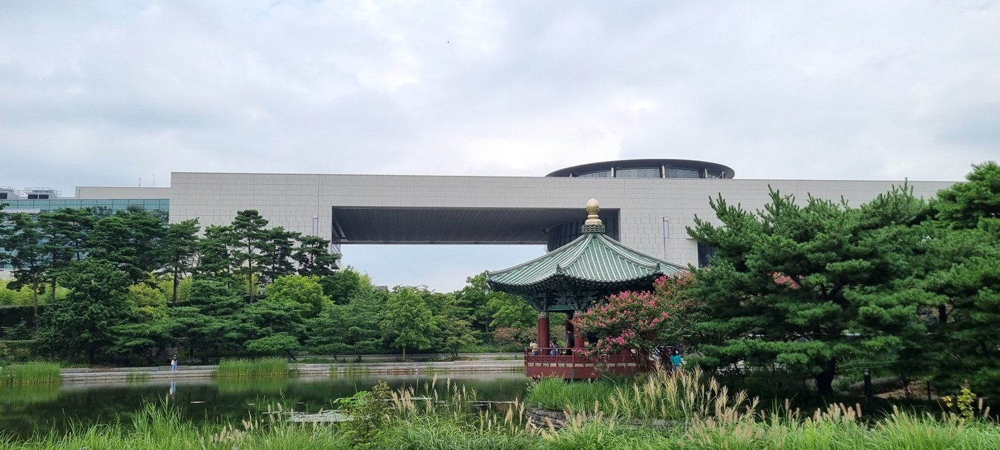
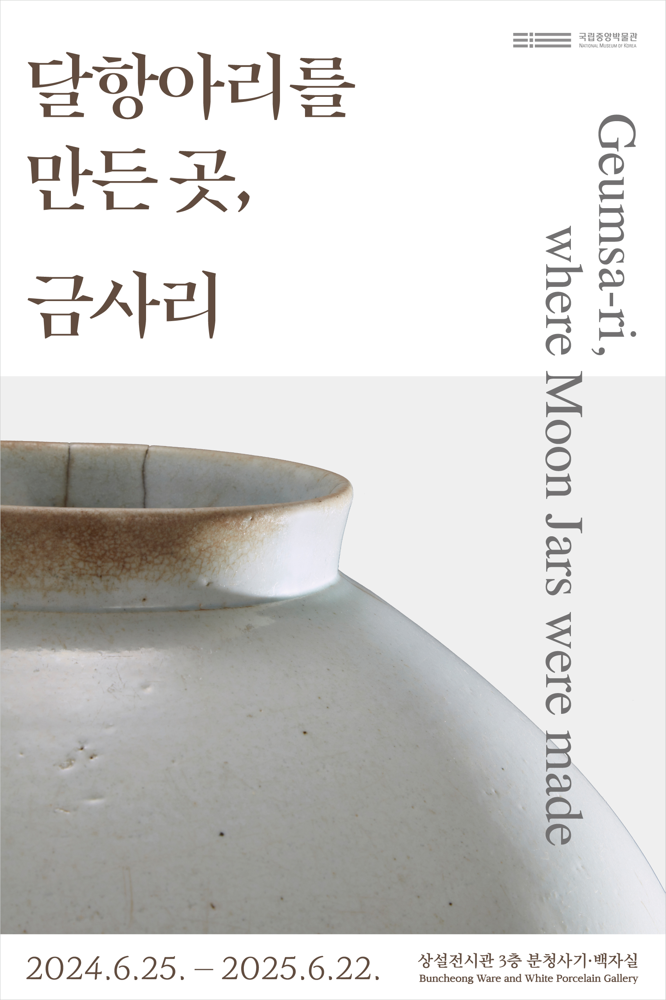
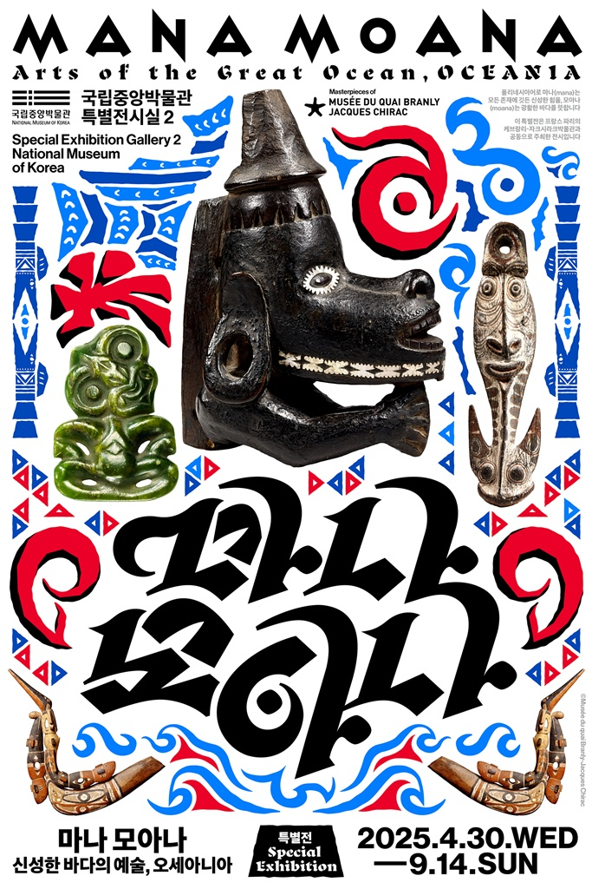

국립 중앙 박물관 안내
1. 관람 가능 시간
- 월, 화 , 목, 금, 일: 10:00~18:00
- 수, 토: 10:00~21:00
2. 시설 안내
3. 특별 전시
-
현재 전시
- 
- 전시명: 달항아리를 만든곳, 금사리
- 1467년 무렵 조선왕실은 궁궐에서 사용할 백자를 만들기 위해 경기도 광주에 관요 곧 왕실 도자기 가마를 두었습니다.
금사리金沙里는 1734년부터 1751년까지 운영된 가마입니다.
금사리는 유백색 곧 우윳빛의 백자색과 달항아리를 만든 곳으로 유명합니다.
금사리 수습 파편을 통해 달항아리 등 금사리에서 만들어진 백자들을 살펴볼 수 있습니다.
-
전시예정
- 
- 전시명: 마나 모아나-신성한 바다의 예술, 오세아니아
-
오세아니아 예술과 문화에 대해 깊이 있게 조망하는 국내 최초의 전시로,
프랑스 케브랑리-자크시라크박물관의 18~20세기 오세아니아 소장품 총 180여 건 소개.